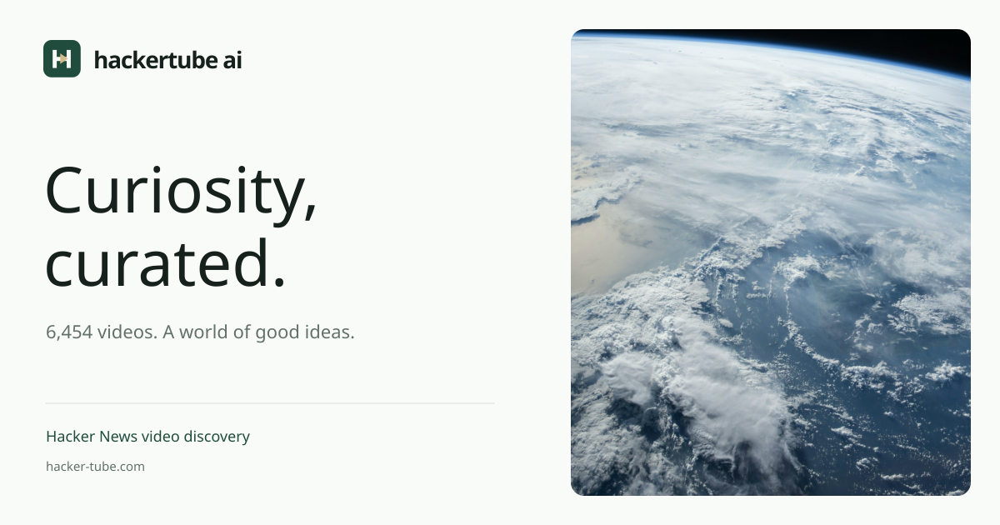

Curiosity,
curated.
知识影像档案馆。把社区长期讨论的好内容，做成值得停留、容易探索的影像收藏。
HackerTube AI 的视觉来自影像档案与编辑出版：冷白的阅读背景、深松绿的操作色、克制的暖金细节。真实视频与摄影是视觉主体；字体、留白和秩序为内容让出空间。
标志与字标
H 字母与播放三角组成标记。四周至少保留标记宽度四分之一的净空；网页图标建议不小于 24px。字标保持比例，使用矢量原文件；深底使用反白版本。不要旋转、描边、拉伸或添加发光效果。
品牌配色
Archive White
档案白
档案白
#F9FBF9Graphite
石墨绿灰
石墨绿灰
#16211dDeep Pine
深松绿
深松绿
#204C3EQuiet Gold
暖金
暖金
#D3BB8ASage Mist
浅鼠尾草
浅鼠尾草
#EAF1EB大面积使用档案白与石墨色，深松绿用于主按钮、链接与焦点。暖金只用于品牌标记和极少量细节，不用于正文。深色模式切换为石墨背景、暖白正文和浅鼠尾草操作色；具体界面使用 tokens.json 中的 OKLCH 语义色值。
字体与层级
DISPLAY / DM SERIF DISPLAY
A world of
good ideas.
good ideas.
用于公开页面标题、精选合集与内容章节。中文优先使用本地宋体类字体。页面主标题 44-70px，章节标题 28-36px，字重 400。
BODY / MANROPE
Explore something
worth your time.
worth your time.
导航、正文、按钮、表单和管理界面统一使用 Manrope。中文正文使用清晰的系统黑体回退。正文 13-16px，按钮与辅助信息 11-13px。
6,454 VIDEOS / 150 TOPICS
IBM Plex Mono 仅用于真实数量、档案元数据与必要的小标签。
界面、影像与动效
形状与布局
8px 控件圆角，12px 影像圆角，1px 语义分割线。桌面视频库四列、平板两列、手机单列。按钮使用同一套字号、间距和焦点规则。
真实影像
保留视频的真实画面，不制作夸张封面。缩略图外展示类型、标题与来源。精选模块可使用摄影，必须与视频或主题形成可解释的关系。
克制的反馈
图片悬停缩放 1.035，过渡约 280ms；收藏、选中和加载状态清晰可见。尊重减少动态效果设置，不使用循环光效或装饰性状态点。
社交分享与品牌应用
